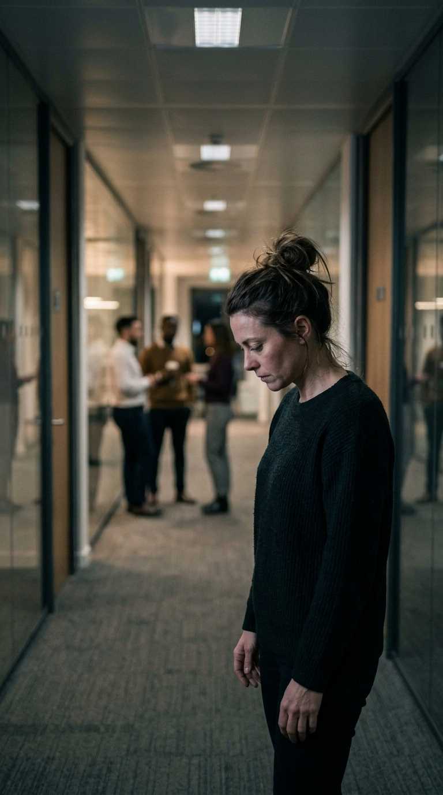
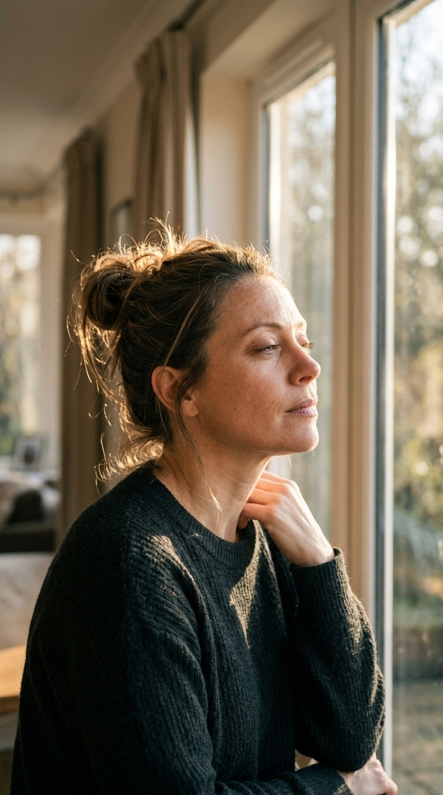

...
Video 1: Productor
Al presionar el botón se activará la pantalla completa y tendrás 5 segundos para encender el grabador antes de iniciar.
Formato Vertical 9:16 • Sincronización Automática
Pausa para Cierre
Fin de la narración (55s). Aquí concluye el bloque de imágenes para dar paso al clip del maguito.